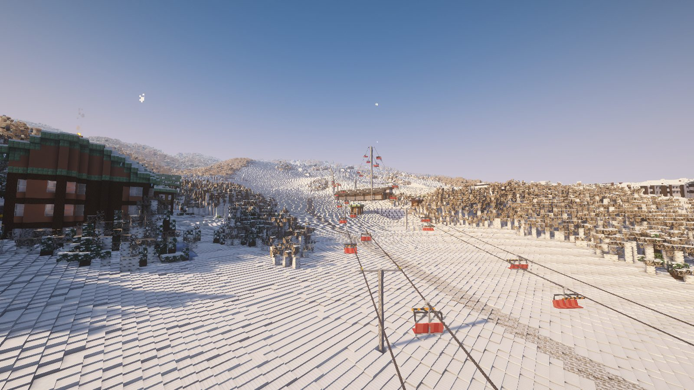
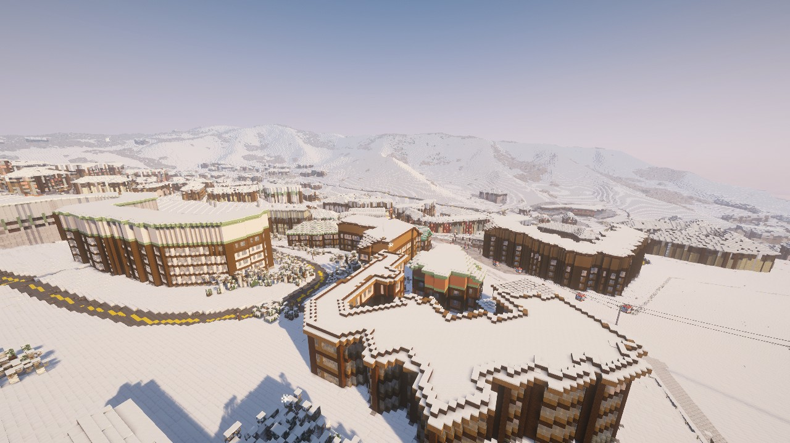
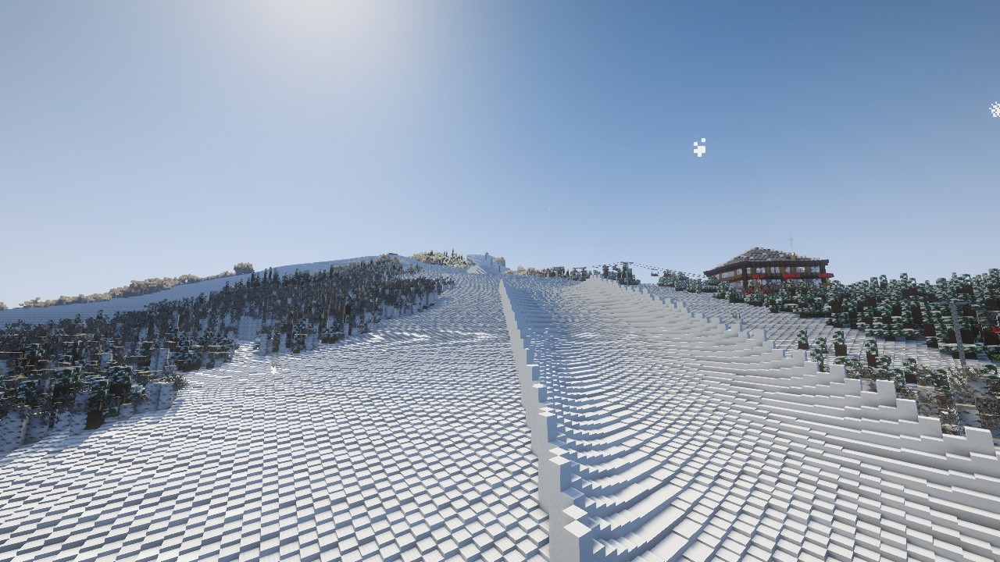
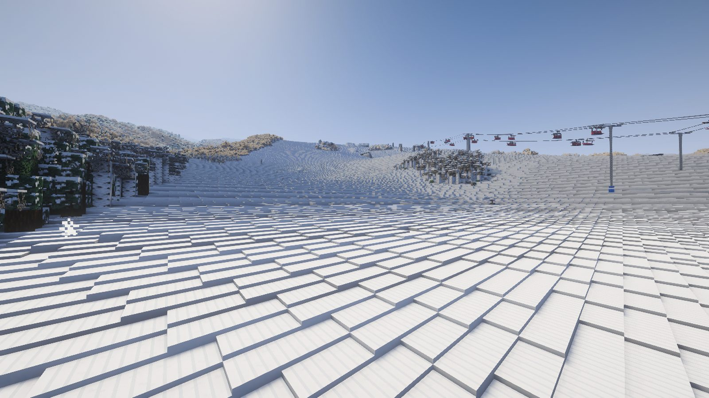
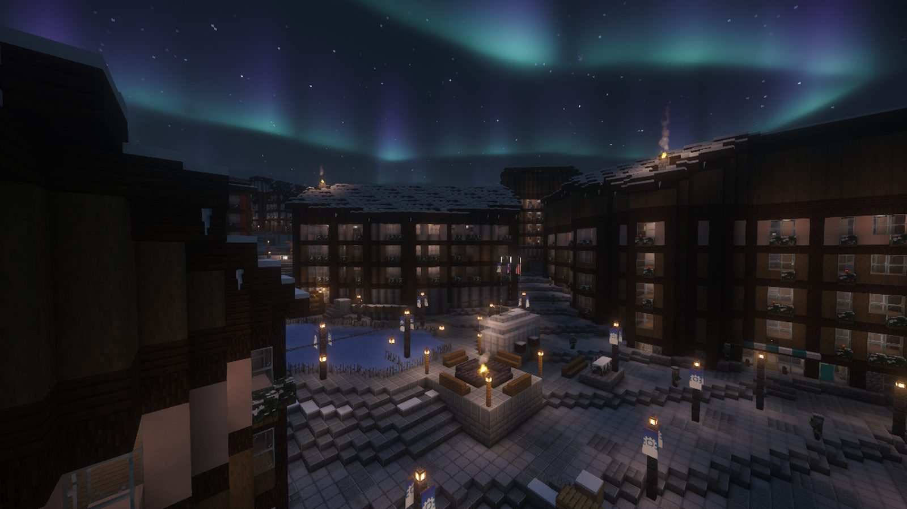
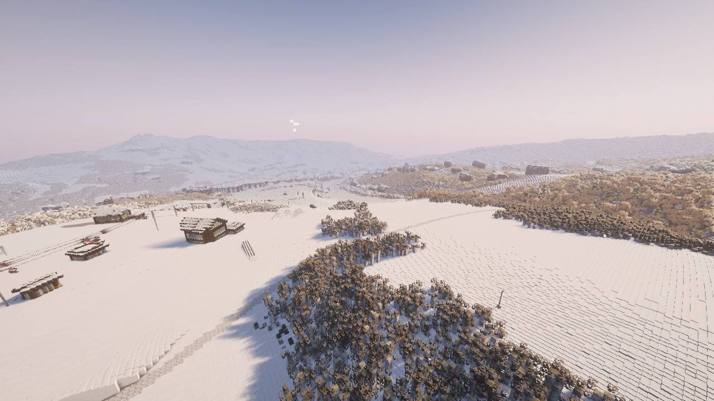

From first chair
to last call.
Every screenshot here is the real server, taken in game with the optional shaders on. Scroll sideways through a day.

First chair
Grab your skis or board from the starter kit and stand on LOAD HERE. The chairs scoop you up.

Gondola laps
The Elk Camp Gondola floats over Base Village to the upper mountain. Pick a line from the top.

Park session
A full superpipe, table-tops, hips, rails and boxes. Tricks score points and Ski Bucks.

Last laps
Corduroy in the afternoon sun. Groomers get tracked up as everyone rides them.

Après
Fire pits, the ice rink and dinner in the village before the last lap of the night.

The whole mountain, mapped from
the real Snowmass.
Not a map. A ski town.
Lifts, trails, villages and restaurants are laid out from the real Snowmass, then built to be lived in.
 Base Village · Snowmass Mall
Base Village · Snowmass MallTwo villages, made for real
Lodges with hallways you can walk, a transit center with an escalator down to the buses, shops, a holiday tree with presents, flags over the welcome monuments and art on the walls.
Real menus
Every restaurant serves what it's known for. You get hungry skiing.
18 lifts that actually run
Gondolas, high-speed quads, six-packs, a T-bar and platters. Towers at real-world heights, chairs you ride in with friends.
The mountain changes
Storms roll in, and the morning after is a powder day.
Earn your gear
Ride, learn tricks and take Ski School lessons to earn Ski Bucks. A day pass is easy. The rarest skis take real dedication. Trade in old gear at Four Mountain Sports.
 Holidays
HolidaysThe village after dark
Iron street lamps with snowflake banners, white lights in the trees and fire pits to warm up by.
Built for friends
Leaderboards on the plaza, voice chat with skiers near you, and a few commands to get around.
Your lift ticket, ten minutes.
You need Minecraft: Java Edition and about ten minutes the first time. After that, wake it, join and ski.
Get a mod launcher
Install Prism Launcher (recommended, free) or the Modrinth App and sign in with your Minecraft account. Your normal worlds are never touched.
Install the pack
Download the FreshTracks .mrpack from the latest release.
- Prism: Add Instance → Import → pick the file.
- Modrinth: + → Import from file.
Wake the mountain
Press Wake the mountain at the top of this page (or on the Play page). About two minutes later it says Online. It naps 15 minutes after the last skier leaves.
Add the server
In the Fresh Tracks instance: Multiplayer → Add Server, address
18.227.232.192, then double-click it.Register and ride
Type
/register. You land on the Base Village plaza with skis, a board, poles, goggles, a jacket, cocoa and a packed lunch. Right-click your skis to click in.
Shaders and Distant Horizons
They're what make Snowmass look like the screenshots on this page: real light on the snow, sunsets, glowing village lights, and the whole range of mountains out to the horizon instead of fog a few hundred blocks away. Both come in the Fresh Tracks pack, so just leave them ticked when you import it.
- Iris + Complementary shadersLighting, shadows, sky and water. Press K in game to turn them on or off.
- Distant HorizonsDraws the far-off mountains and valleys at low detail, so you can see across the resort from the top.
- SodiumSmoother frame rates, and it makes room for the other two.
On an older PC or laptop, untick shaders first if the game stutters, then lower Distant Horizons' distance in its settings. Keep Simple Voice Chat on to talk to skiers near you.
Trouble joining?
"Can't connect to server" or it times out
The mountain is asleep or still waking. Press Wake the mountain above and wait for Online before joining.
"Incompatible client", "outdated" or missing mods
Your pack is out of date or you're in the wrong instance. Download the latest .mrpack from the releases page, import it again, and join from that instance.
I'm floating and can't do anything
New visitors start as spectators. Type /register and you're in.
My starter kit didn't show up
It needs 11 free inventory slots. Clear some space and type /register again.
I'm stuck somewhere
Type /stuck to get back to safe ground. If something on the map looks broken, /report it with a short note and it'll get fixed.
I can't place or break blocks
That's on purpose. Visitors can ski, ride, shop and eat, but the resort itself is protected. Ask Griffdog21 if you'd like building permission.
Voice chat isn't working
Make sure Simple Voice Chat is enabled in your instance, then press V in game to pick your microphone.
Mountain rules: be respectful, leave other players' gear alone, and enjoy the resort. The Snowmass world lives on the server and isn't part of the mod download.
See you on the hill.
Wake the mountain, send your friends this page, and meet at the Base Village plaza.